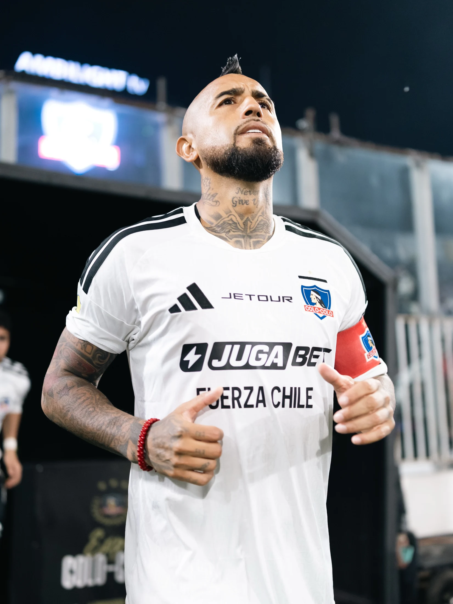
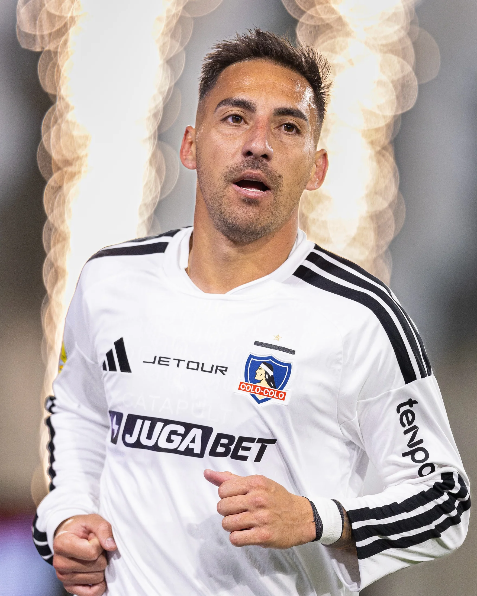

PRODUCTORA AUDIOVISUAL · FOTOGRAFÍA DEPORTIVA
La emoción,
en primer plano.
En la cancha y fuera de ella.
Historias contadas desde adentro.
UNA MIRADA, DISTINTAS HISTORIAS
Trabajos seleccionados.
Acción, retratos y movimiento.
Así vemos lo que pasa.
OTRA FORMA DE CONTARLO
Historias en movimiento.
Acción y una mirada al otro lado
de la cámara.

DESDE ADENTRO. SIEMPRE.NUESTRA MIRADA
Estar ahí.
Mirar distinto.
Hay una historia en cada gesto. En la celebración, en la concentración antes de entrar a la cancha, en ese segundo que no vuelve.
Somos Contrasecuencia Films. Fotografía deportiva y producción audiovisual con una mirada cercana a las personas y a lo que las mueve.
Fotografía deportiva
Acción, retratos y toda la emoción alrededor del juego.
Producción audiovisual
Historias en movimiento y contenido para compartir.
Marcas y eventos
Producto, personas y momentos que merecen ser recordados.
HABLEMOS DE TU PRÓXIMA HISTORIA